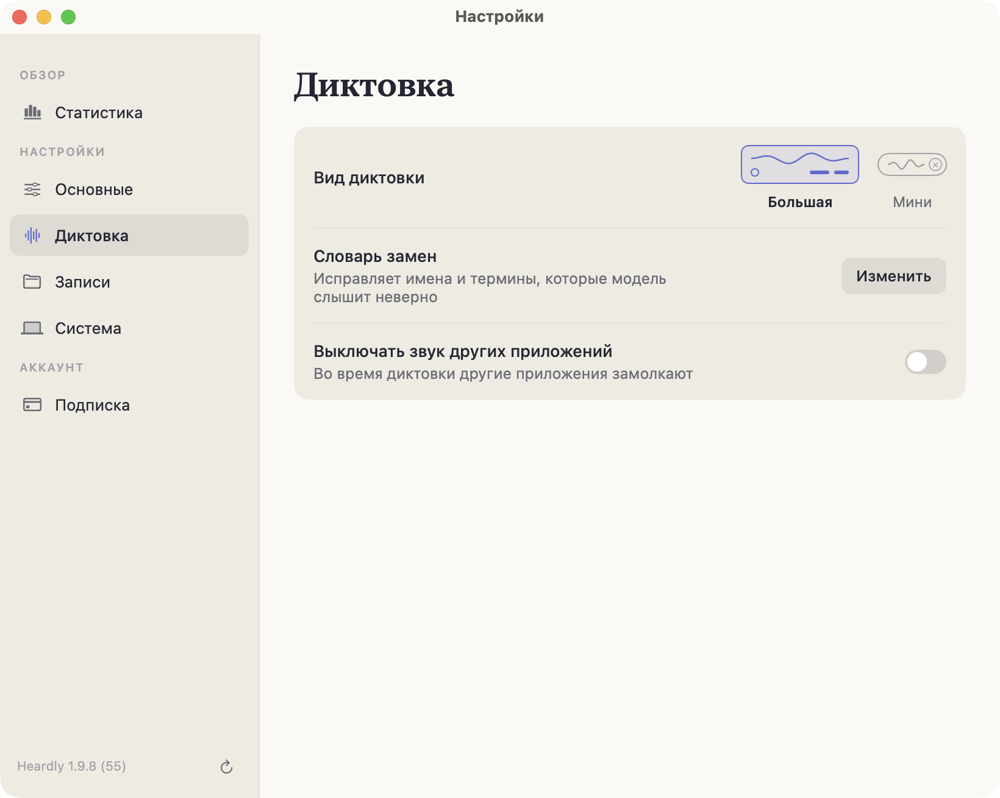
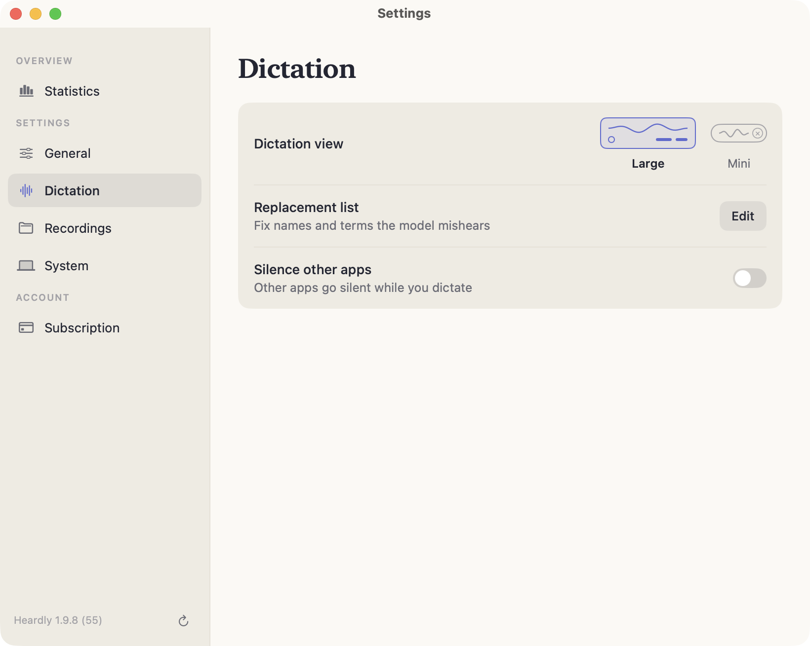

НастройкиSettings
Справочник настроекSettings reference
Все настройки Heardly собраны в одном окне из шести разделов. Открыть его можно из попапа в строке меню или сочетанием ⌘ + запятая.Every Heardly setting lives in one window with six sections. Open it from the menu bar panel or with ⌘ + comma.
ОсновныеGeneral


| Горячая клавишаShortcut | Сочетание, которым начинается диктовка. По умолчанию правый ⌘.The combination that starts dictation. The right ⌘ by default. |
| Активация диктовки приActivation | «Нажатие» — клавиша работает как выключатель, «Удержание» — запись идёт, пока клавиша зажата.“Toggle” makes the key a switch; “Hold” records only while the key is down. |
| МикрофонMicrophone | «Авто» выбирает устройство сам, можно задать конкретное или системное по умолчанию.“Auto” picks a device for you; you can also name one, or follow the system default. |
| Язык распознаванияRecognition language | Автоопределение или конкретный язык — подробнее.Auto-detect or a specific language — more on this. |
ДиктовкаDictation


| Вид диктовкиBar style | Большая панель или мини. У мини выбирается положение: внизу экрана или у значка в строке меню. Как они выглядят.The large bar or the mini one. The mini bar has a position: bottom of the screen or under the menu bar icon. How they look. |
| Словарь заменReplacement list | Правила для имён и терминов — как их писать.Rules for names and terms — how to write them. |
| Выключать звук других приложенийSilence other apps | Приглушает остальные программы на время диктовки — зачем.Quiets other apps while you dictate — why. |
ЗаписиRecordings
| Папка для расшифровокTranscripts folder | Где лежат текстовые файлы и как их перенести — подробнее.Where the text files live and how to move them — more on this. |
| История транскрипцийTranscription history | Открывает окно Истории.Opens the History window. |
СистемаSystem


| Запускать при входе в системуLaunch at login | Heardly стартует вместе с Mac и ждёт в строке меню.Heardly starts with the Mac and waits in the menu bar. |
| Команда в терминалеTerminal command | Ставит команду heardly (Pro).Installs the heardly command (Pro). |
| ИнтерфейсInterface | Язык меню и окон: русский, английский, испанский, французский. На распознавание не влияет.The language of menus and windows: Russian, English, Spanish, French. It does not affect recognition. |
| ОбновленияUpdates | Показывает установленную версию и проверяет новую — подробнее.Shows the installed version and checks for a new one — more on this. |
Статистика и ПодпискаStatistics and Subscription
«Статистика» — сводка по вашим записям, что в ней считается. «Подписка» — состояние доступа, покупка и восстановление, см. Бесплатно, пробный период и Pro и Лицензия и устройства.
“Statistics” is a summary of your own recordings — what it counts. “Subscription” holds the state of your access, the purchase and the restore flow; see Free, trial and Pro and Licence and devices.